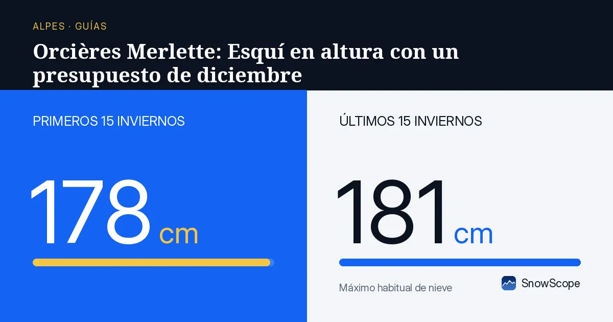

Orcières Merlette: Esquí en altura con un presupuesto de diciembre
Si quieres esquiar en diciembre sin gastar demasiado, Orcières Merlette es una opción sólida porque sus remontes más bajos empiezan alto, a 1826 m. Este punto de partida elevado ayuda a mantener la nieve en el suelo incluso a principios de invierno, cuando otros lugares aún están verdes.
Consulta la previsión de nieve en tiempo real de Orcières Merlette en la app SnowScopeEspesor de nieve, alertas de nieve polvo y mapa 3D, gratis.
La respuesta corta para diciembre
Orcières Merlette se encuentra en los Hautes-Alpes y cuenta con una zona de esquí cartografiada con 49 km de pistas y 26 remontes. Es una estación modesta, pero su altura es una gran ventaja para los viajes de principios de temporada. Nuestro historial de nieve de 46 inviernos pasados muestra que las condiciones mejoran rápidamente durante el mes.
En la primera semana de diciembre, hay un 30 % de probabilidades de tener 30 cm o más de nieve en la base. Para la última semana del mes, esto sube al 74 % de los inviernos pasados. Si buscas nieve más profunda, la zona media a 2278 m tiene 50 cm o más en el 78 % de los inviernos pasados durante la última semana de diciembre.

Base y cima: dónde está la nieve
La estación se sitúa entre 1826 m y 2731 m, lo que le da un desnivel de 905 m. En un diciembre habitual, la profundidad de la nieve en la base es de 33 cm. El 15 de diciembre, la profundidad habitual es de 31 cm en la parte baja y 104 cm en la parte superior de los remontes. Esta gran altitud asegura que las pistas superiores estén casi siempre listas para esquiar.
Nuestro historial de nieve muestra que la parte superior de los remontes tiene 30 cm o más de nieve en el 100 % de los inviernos pasados a partir del 8 de diciembre. Sin embargo, algunos años son más escasos que otros. En aproximadamente 1 de cada 10 inviernos, la profundidad en la base puede estar por debajo de 9 cm en diciembre. El diciembre más escaso en la base fue el 2015-16, cuando solo hubo 2 cm de nieve.
El lado económico
Una de las mejores cosas de esta estación es el precio del forfait. Puedes comprar un pase Pass Horizon de adulto de 6 días en la web oficial desde 227 EUR. Es un buen precio para una semana de esquí en los Alpes franceses, especialmente porque el pase también incluye acceso a la piscina y a la pista de hielo.
Al alojarte en una estación con una base alta como esta, reduces el riesgo de tener que usar transporte para llegar a la nieve. Puedes gastar tu presupuesto en el viaje en sí en lugar de en costosos desplazamientos diarios. Los 49 km de pistas cartografiadas ofrecen suficiente variedad para una semana económica en las pistas.
Orcières o Les Orres
Es útil comparar Orcières Merlette con Les Orres, que está cerca. Les Orres tiene una zona de esquí ligeramente mayor con 54 km de pistas y 21 remontes. Sin embargo, su remonte más bajo está a 1554 m, que es mucho más bajo que Orcières. Esta diferencia afecta a la profundidad de la nieve en la parte baja de la estación.
En un diciembre habitual, la base en Les Orres tiene 23 cm de nieve, mientras que Orcières tiene 33 cm. El 15 de diciembre, la profundidad habitual en la base de Les Orres es de 22 cm. Los precios en Les Orres varían según la fecha; un pase de adulto de 1 día cuesta 34 EUR a principios de diciembre, 38,50 EUR a mediados de diciembre y 45,50 EUR después del 19 de diciembre. Aunque Les Orres es una buena opción, Orcières ofrece un punto de partida más alto para tu día de esquí.
Primera nieve y cómo han cambiado los inviernos
Nuestro historial de nieve muestra que la primera nieve duradera suele llegar a la cima de Orcières el 14 de octubre y a la base el 3 de noviembre. Curiosamente, la nieve de diciembre ha aumentado aquí con el tiempo. En los primeros 15 inviernos de nuestros registros (1980-81 a 1994-95), el promedio de diciembre en la base era de 30 cm. En los últimos 15 inviernos (2011-12 a 2025-26), este promedio subió a 35 cm.
A fecha de 13 de noviembre de 2026, hay actualmente 0 cm de nieve en la base y 12 cm en la cima. La previsión para los próximos 7 días sugiere 20 cm de nieve nueva en la base y 70 cm en la cima. Mirando más adelante, las perspectivas a dos semanas para la zona media y superior muestran un rango de 70 cm a 106 cm de nieve nueva, lo cual es una señal positiva para el inicio de la temporada.
Consejos para esquiadores
- Reserva el Pass Horizon de 6 días en la web oficial desde 227 EUR para tener incluido el acceso a la piscina y a la pista de hielo.
- Apunta a la semana del 22 al 28 de diciembre si quieres la mejor oportunidad de tener una base de 50 cm de nieve, lo que ocurre en el 48 % de los inviernos pasados.
- Quédate en las pistas por encima de la altura media de 2278 m si las pistas inferiores están escasas, ya que la cima tiene 30 cm o más en el 100 % de los inviernos pasados después del 8 de diciembre.
- Consulta el boletín de aludes antes de esquiar fuera de pista, especialmente dado que el pico habitual de la temporada en la cima es de 307 cm.
Más mapas (sitios externos)
Referencias y créditos
- Orcières, official ticketing, winter 2026-27 pass.orcieres.com/en/ticketing
- Les Orres, official ski pass prices 2026-27 www.lesorres.com/forfaits-de-ski
- SnowScope, December snow at three heights and today's snow map snowscope.app/
Sobre estas cifras
Cifras de nieve: histórico de nieve de SnowScope, 46 inviernos pasados (1980-81 a 2025-26) a tres alturas de cada estación (un modelo del pasado corregido por altitud: una estimación para una zona, no mediciones de la estación); cifras de diciembre calculadas con los espesores diarios de esos inviernos. Nieve actual y tendencia a dos semanas: previsiones de SnowScope (tendencia de ECMWF y GFS, un rango, no una promesa). Remontes y pistas: cartografía de OpenSkiMap. Precios: las páginas oficiales de abajo, consultadas el 2026-11-13; los precios pueden cambiar, compruébalos antes de reservar.
Boletines oficiales de aludes: Météo-France – Bulletin d'estimation du risque d'avalanche
Citar este informe
Para investigación, docencia o prensa: cifras y gráficos reutilizables libremente bajo CC BY 4.0 con esta cita.
SnowScope (2026), Orcières Merlette: Esquí en altura con un presupuesto de diciembre, https://snowscope.app/blog/es/2026/11/orcieres-merlette-december-ski-budget-snow-2026.html, consultado el 2026-11-14
SnowScope (Atlas Labs). (2026, November 14). Orcières Merlette: Esquí en altura con un presupuesto de diciembre. SnowScope snow reports. https://snowscope.app/blog/es/2026/11/orcieres-merlette-december-ski-budget-snow-2026.html
BibTeX
@misc{snowscope2026orcieresmerlettedecember,
author = {{SnowScope (Atlas Labs)}},
title = {Orcières Merlette: Esquí en altura con un presupuesto de diciembre},
year = {2026},
month = nov,
howpublished = {\url{https://snowscope.app/blog/es/2026/11/orcieres-merlette-december-ski-budget-snow-2026.html}},
note = {Published 2026-11-14 19:21 UTC; accessed 2026-11-14}
}· CC BY 4.0 · Métodos, datos y herramientas →
Orcières Merlette: nieve y temperatura según la altura, este invierno vs el pasado (herramientas) →
Sigue Orcières Merlette
Gratis: un aviso cuando llega la nieve y la previsión cada mañana.